1. GAS LAWS
KELVIN TEMPERATURE
T: temperature in Kelvin scale, t: temperature in Celsius scale
EQUATION OF STATE
p: pressure (P, Pascal), V: volume (m³), n: number of moles of the gas(mol), R: universal gas constant, T: Kelvin temperature of the gas (K), k: Boltzmann’s constant, N: number of molecules in the gas
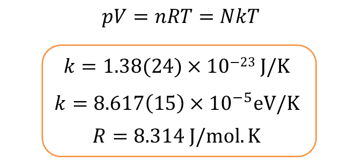
IDEAL GAS LAW
BOYLE’S LAW FOR PRESSURE
If the temperature of the gas is constant
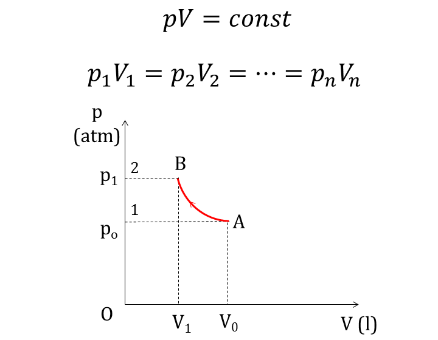
GAY-LUSSAC'S LAW OF PRESSURE-TEMPERATURE
If the volume on a gas is constant
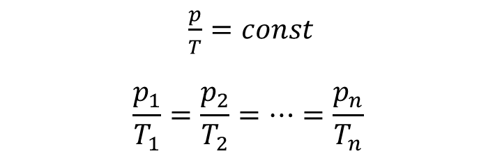
p: pressure of gas at temperature t, p_o: pressure at 0 Celsius, γ: factor when volume is constant
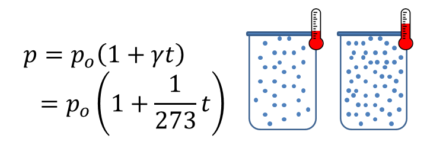
Example when t=0 Kelvin
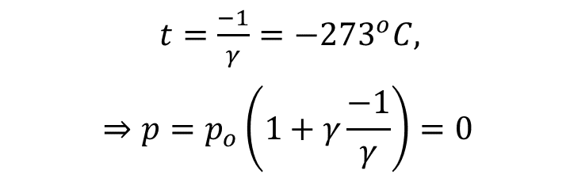
CHARLES'S LAW OF VOLUMES
If the pressure on a gas is constant
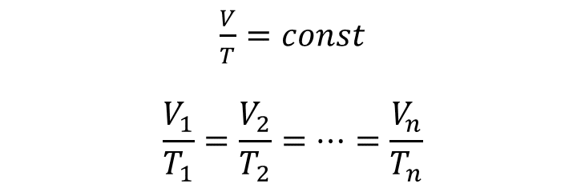
2. CHANGES OF STATE AND SHAPE
HEAT
Q_e: Heat emitted, Q_r: heat received, m: object's total mass (kg), c: specific heat(J/kg.K), ∆t: change in temperature (K)
The specific heats of some materials
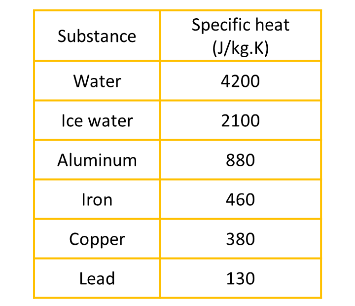
FUSION (FREEZING OR SOLIDIFICATION)
Q: quantity of heat (J), λ: heat of fusion (J/kg), m: mass (kg)
Heat of fusion of some materials
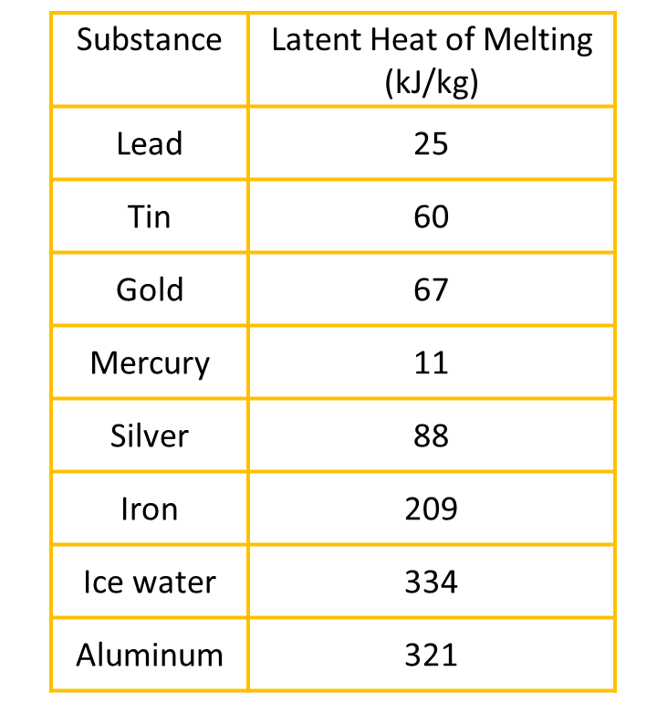
VAPORIZATION
L: heat of vaporization
Heat of vaporization of some materials
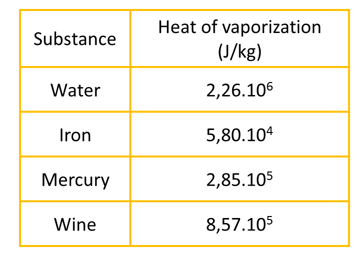
LINEAR EXPANSION
l_o: original length (m), α: coefficient of linear expansion (K⁻¹), ∆t: change in temperature
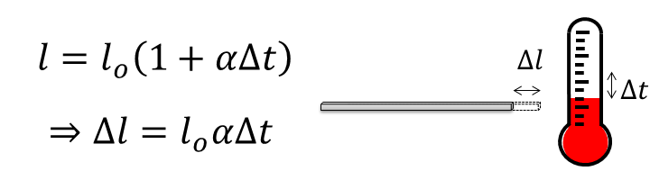
VOLUME EXPANSION
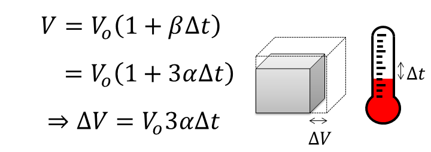
AREA EXPANSION
CHANGE OF DENSITY (VOLUMETRIC MASS DENSITY)
D_o: original density (kg/m³)
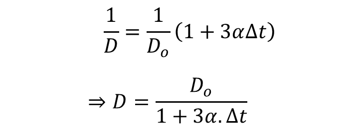
CHANGE OF DIAMETER OF THE CROSS SECTION OF A SOLID
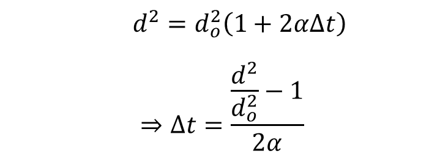
3. THERMODYNAMICS
THE FIRST LAW OF THERMODYNAMICS
∆U: change in internal energy, W: work done by the system, Q: heat added into or out of the system
APPLICATION OF FIRST LAW TO IDEAL GAS LAWS
- Volume is constant
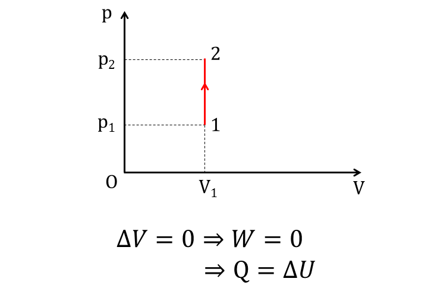
- Pressure is constant, W': work created by gas
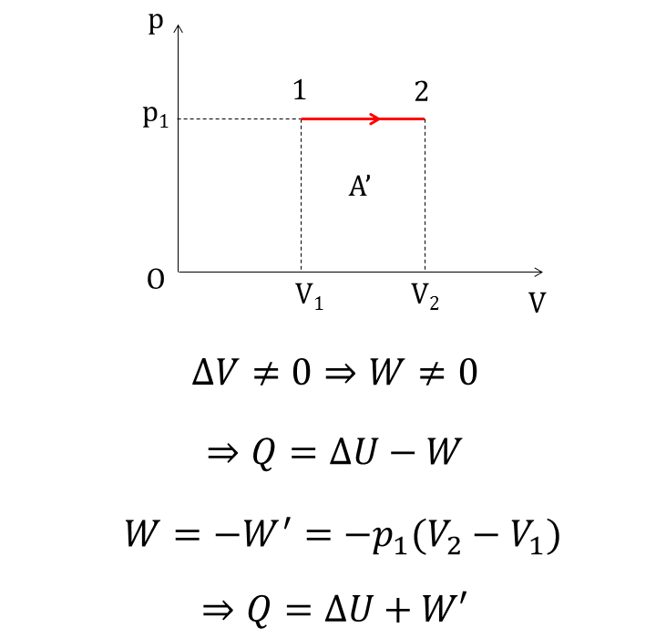
- Temperature is constant
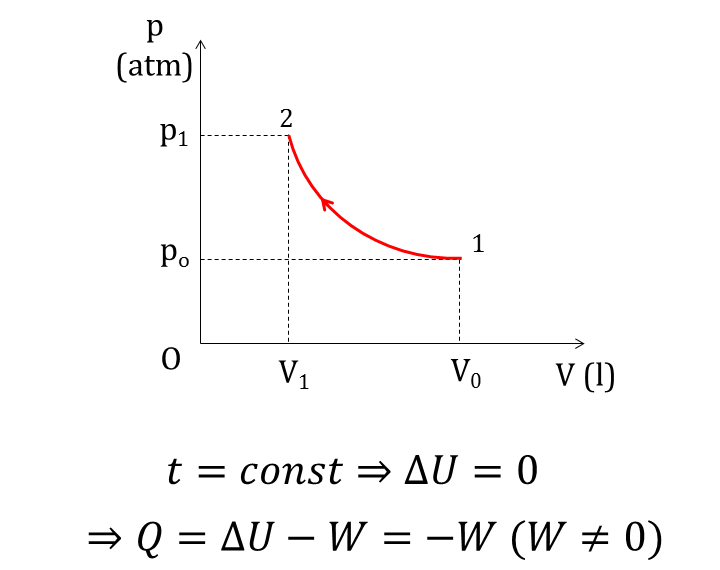
THE SECOND LAW OF THERMODYNAMICS
- The efficiency of a cyclic heat engine
W′: work carried out per cycle (J), Q₁: heat absorbed per cycle from the higher temperature (J), Q₂’: heat rejected per cycle to the lower temperature (J)
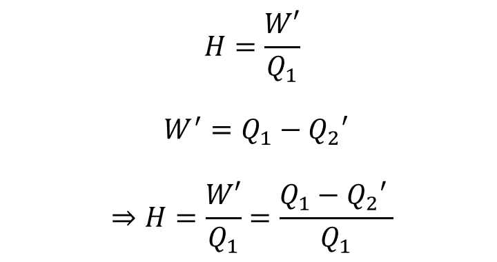
- Maximum thermal efficiency
T₁, T₂: higher and lower temperatures